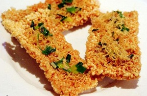

Đã giòn tan lại bùi ngậy với cách làm cơm cháy Ninh Bình
Cách làm cơm cháy Ninh Bình sau đây chỉ mất đúng 2h của bạn nhưng cho bạn và gia đình món ăn vặt ngon chưa từng thấy, bất cứ lúc nào cũng có thể đem ra ăn lai rai hoặc để làm đồ nhắm cho anh xã nhắm rượu.

Cùng bắt tay làm thử thôi nào!
Nguyên liệu cần có cho món ăn này
+ Gạo nếp: 1kg
+ Ruốc thịt lợn bông: 400g
+ Hành khô phi
+ Dầu ăn, gia vị, mắm, đường
Gạo nếp vo sạch rồi đem ngâm khoảng 2h đồng hồ sau đó cho vào chõ đồ xôi đồ chín. Nếu không có xoong hấp bạn có thể nấu cơm nếp, món cơm cháy Ninh Bình muốn ngon bạn nên nấu hơi khô 1 chút nhé.
Cách làm cơm cháy đóng mảng: Khi cơm nếp chín, đổ cơm ra khay hình chữ nhật, ( khay nhỏ để cho vừa tủ lạnh nhé) rồi dùng muôi ướt hoặc thìa gỗ hoặc thìa quết qua chút dầu ăn, vừa ấn và dàn thật mỏng xôi sao cho xôi dày nhất cũng chỉ 1cm. Cho vào tủ lạnh ngăn mát chừng 4-5 tiếng để cơm cứng lại sau đó lấy cơm ra cắt thành những miếng vừa phải ( miếng 3×4 cm là vừa).
Lấy một chiếc nồi nhỏ cho 1 muỗng canh nước, 2 muồng đầy đường vào đun sôi sau đó đổ ra bát. Hành khô bóc vỏ thái mỏng cho vào chảo phi thơm vàng sau đó vớt một phần hành phi ra bát và đổ phần hành, dầu phi hành còn lại vào bát bát đường muối, thêm chút ớt băm nhỏ nếu bạn ăn được cay, nếu cho nhiều hành có thể có mùi hơi hắc với 1 số người, nếu không thích mùi hành bạn có thể cho ít đi hoặc không cho.
Bắc chảo chống dính lên bếp, làm nóng chảo đổ dầu ăn vào đun cho dầu sôi thì lần lượt thả từng miếng cơm đã cắt vào chiên vàng. Cách làm cơm cháy chiên giòn yêu cầu mỡ phải thật nóng để có thể làm giòn và xốp miếng cơm cháy, nếu bạn cho cơm khi dầu chưa nóng sẽ làm cơm thấm dầu, ăn rất ngấy.
Khi cơm cháy chiên vừa vớt ra còn nóng bạn rưới hỗn hợp mắm đường dầu phi hành lên miếng cơm cháy. Chú ý rưới lượng nước vừa phải, nhanh tay để miếng cơm cháy không bị ướt quá. Sau đó,lấy ruốc rắc đều xung quanh miếng cơm cháy cho ruốc bám đều sau đó rắc thêm hành phi. Cách làm cơm cháy chà bông yêu cầu ruốc phải thật bông nhìn vừa đẹp mắt lại vừa ngon, bạn có thể mua ruốc làm sẵn để làm sẽ hơn là tự làm ruốc.
Xếp miếng cơm cháy lên giấy thấm dầu. Lần lượt làm tới khi hết là có thể thưởng thức. Cơm cháy Ninh Bình ngon phải được thưởng thức lúc còn giòn, vì thế bạn có thể ăn ngay lúc nóng hoặc chờ khi bánh nguội là cho vào túi nilon buộc chặt, khi nào ăn thì lấy.